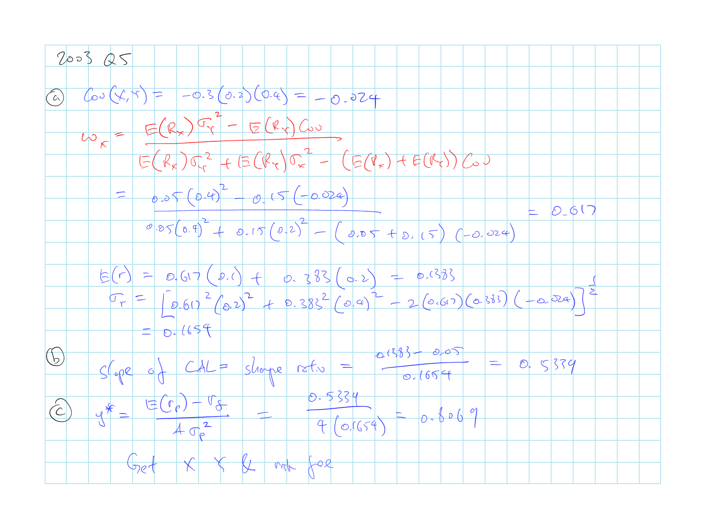
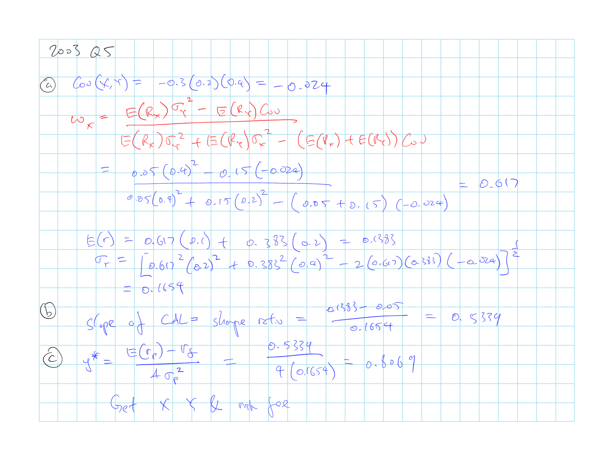

3 A2 BKM7: Optimal Risky Portfolios
Z. Bodie, A. Kane, A. Marcus
3.1 Cliff’s Summary
Total Variance of a Portfolio of Equally Weighted Assets
\(\sigma^2_p = \underbrace{\overbrace{\dfrac{\bar{\sigma}^2}{n}}^{\lim \limits_{n \rightarrow \infty} \rightarrow 0}}_{\text{Firm Risk}} + \underbrace{\dfrac{n-1}{n}\bar{\operatorname{Cov}}}_{\text{Systematic Risk}}\)
For 2 risky asset
\(\operatorname{E}[r_p] = w_D \operatorname{E}[r_D] + w_E \operatorname{E}[r_E]\)
\(\sigma^2_p = w^2_D \cdot \sigma^2_D + w^2_E \cdot \sigma^2_E + 2 \cdot w_D \cdot w_E \cdot \operatorname{Cov}(r_D, r_E)\)
Weights for the minimum variance portfolio
\(w_D^{Min} = \dfrac{\sigma^2_E - \operatorname{Cov}(r_D, r_E)}{\sigma^2_E + \sigma^2_D - 2\cdot\operatorname{Cov}(r_D, r_E)}\)
Know the shape of the portfolio opportunity set for different \(\rho\)
For 2 risky asset and risk free
Optimal Risky Portfolio: Available portfolio with highest Sharpe ratio
Weights of the optimal risky portfolio:
\(w_D = \dfrac{\operatorname{E}[R_D]\sigma^2_E - \operatorname{E}[R_E] \operatorname{Cov}(r_D, r_E)}{\operatorname{E}[R_D]\sigma^2_E + \operatorname{E}[R_E]\sigma^2_D - \left( \operatorname{E}[R_D] + \operatorname{E}[R_E] \right) \operatorname{Cov}(r_D, r_E)}\)
- \(R_D = r_D - r_f\) = XS return over risk free
Markowitz Portfolio
Asset allocation vs security allocation
Risk pooling (does not reduce risk) vs risk sharing
- Caveat of risk sharing
Time diversification is not true
3.1.1 Types of Exam Questions
Haven’t done TIA practice questions
Plug and play
- 2000, Q8: minimum variance expected return by calculating the weight
Weights Calculation
- 2003, Q5: Weights for risky and risk free and CAL
- 2005, Q5: optimal risky portfolio and special case with \(\rho = -1 or 1\)
- 2006, Q5: weight for assets in optimal risky
- 2007, Q2: optimal risky weights and complete portfolio weights
- \(\star\) 2008, Q1: optimal risky and complete ptf and rebalance
- 2009, Q2: optimal risky portfolio and sharpe ratio
- 2014, Q5: optimal complete portfolio return and \(\sigma_c\)
Concepts
- 2001, Q10: Draw CML and efficient frontier
- 2002, Q7: Draw portfolio opportunity set for \(\rho = -1\) and \(\sigma\) when \(\rho = 1\)
- 2002, Q13: Fallacy of time diversification
- 2003, Q7: Efficient frontier
- 2004, Q4: seperation principle; draw CAL, eff frontier; indifference curve
- 2005, Q6: draw ptf opporunity set
- 2007, Q3: fallacy of time diversification
- 2013, Q3: risk sharing and pooling in insurance
Other
3.2 Diversification and Portfolio Risk
2 categories of risk:
Market/ Systematic/ Nondiversifiable Risk: Risk that can no be diversified away
Unique/ Firm-Specific/ Nonsystematic/ Diversifiable: Portion of the risk that can be eliminated via diversification

alt text
Total Variance of a Portfolio of Equally Weighted Assets
\(\sigma^2_p = \underbrace{\overbrace{\dfrac{\bar{\sigma}^2}{n}}^{\lim \limits_{n \rightarrow \infty} \rightarrow 0}}_{\text{Firm Risk}} + \underbrace{\dfrac{n-1}{n}\bar{\operatorname{Cov}}}_{\text{Systematic Risk}}\)
Systematic risk remains even as \(n \rightarrow \infty\)
Formula assumes each of the \(n\) securities have the same \(\sigma\) and \(\bar{\operatorname{Cov}}\) with each other
For a diversified portfolio the contribution to portfolio risk will only depends on the covariance of the security’s return with other securities
3.3 Portfolios of 2 Risky Assets
Efficient Diversification
Weights of risky assets that would produce lowest risk level for the risky portfolio P
\(\operatorname{E}[r_p] = w_D \operatorname{E}[r_D] + w_E \operatorname{E}[r_E]\)
\(\sigma^2_p = w^2_D \cdot \sigma^2_D + w^2_E \cdot \sigma^2_E + 2 \cdot w_D \cdot w_E \cdot \operatorname{Cov}(r_D, r_E)\)
Adding assets with \(\rho < 1\) will reduce \(\sigma_p\) without necessarily reducing \(\operatorname{E}[r_p]\)
\(\rho_{DE} = \dfrac{\operatorname{Cov}(r_D, r_E)}{\sigma_D \sigma_E}\)
Hedge asset = asset that has a negative correlation with other assets in the portfolio
Relationship between the \(w_E\) in the risky portfolio P and \(\sigma_p\) with different \(\rho\)

alt text
Minimum Variance Portfolio
Portfolio with the lowest variance that can be constructed from assets with a given level of correlation
Weights for the minimum variance portfolio
\(w_D^{Min} = \dfrac{\sigma^2_E - \operatorname{Cov}(r_D, r_E)}{\sigma^2_E + \sigma^2_D - 2\cdot\operatorname{Cov}(r_D, r_E)}\)
\(w_E^{Min} = 1 - w_D^{Min}\)
Portfolio Opportunity Set for a given \(\rho\)

alt text
\(\operatorname{E}[r_p]\) vs \(\sigma_p\) with varying weights for a given \(\rho\)
For assets with \(\rho = -1\) you can achieve \(\sigma = 0\)
For assets perfectly correlated the minimum variance is investing all in the asset with lower risk
3.4 Portfolios of 2 Risky and a \(r_f\) Assets

alt text
Optimal Risky Portfolio
Available portfolio with highest Sharpe ratio
Portfolio formed where the CAL is tangential to the portfolio opportunity set
This only consist of risky assets, only use the CAL to identify the best weight of risky assets (weight between risky portfolio P and \(r_f\) is determined later)
Minimum variance portfolio is not the optimal portfolio
- CAL with minimum variance portfolio does not yield the greatest Sharpe ratio
Weights of the optimal risky portfolio:
\(w_D = \dfrac{\operatorname{E}[R_D]\sigma^2_E - \operatorname{E}[R_E] \operatorname{Cov}(r_D, r_E)}{\operatorname{E}[R_D]\sigma^2_E + \operatorname{E}[R_E]\sigma^2_D - \left( \operatorname{E}[R_D] + \operatorname{E}[R_E] \right) \operatorname{Cov}(r_D, r_E)}\)
- \(R_D = r_D - r_f\) = XS return over risk free
Optimal Complete Portfolio
Weights between \(r_f\) and risky portfolio P depends on investors risk aversion \(A\) as per BKM 6

alt text
3.5 Markowitz Portfolio Selection Model

alt text
Minimum-variance Frontier
Made up of dominant portfolios
- Portfolios with the lowest variance for each level of expected return
Global Minimum-variance porfolio
Portfolio with the lowest variance
Efficient Frontier
Portion of the minimum-variance frontier above the global minimum-variance portfolio
Disadvantages
The number of estimates required to run the Markowitz model is enormous for many stocks. The expected return and variance estimates for each stock needs to be estimated, in addition to the covariances between every stock
Having to make so many estimates, increases the chance of producing nonsensical results. In particular, the covariances may not make sense when all the data is rolled up
Expected return and variance of the optimal complete portfolio
\(\operatorname{E}[r_p] = \sum_i w_i \operatorname{E}[r_i]\)
\(\sigma^2_p = \sum_i \sum_j w_i w_j \operatorname{Cov}(r_i, r_j)\)
3.6 Separation Principle
Optimal risky portfolio P is the same for all investors
Difference between investors is the portion of the complete portfolio in the risky portfolio vs risk free asset driven by investor’s risk aversion \(A\)
2 steps in portfolio selection under separation principle:
Select optimal risky portfolio
This only differs depending on the analyst
CAL is the same for all investors
Select the optimal complete portfolio
Allocate between risk free vs risky assets depending on investors \(A\)
Investor’s \(A\) dictates where the optimal complete portfolio lies on the CAL
3.7 Asset Allocation vs Security Selection
So far focused has been on asset allocation
- Allocation of a complete portfolio to the various asset categories
Step 1: Asset allocation
- Figure out how much to allocate to each asset class
Step 2: Security selection
- Select specific securities in order to try increase return
Procedure of optimal security selection is the same as the procedure of optimal asset allocation in the above sections
Since it’s impossible to be expert in all securities from all asset class, after allocating money to the different asset classes, consult expert for the security selection in each class
3.8 Risk Pooling vs Risk Sharing
3.8.1 Risk Pooling
Risk pooling involves merging several uncorrelated projects together, aka the insurance principle
Does not reduce risk (sharpe ratio and \(\sigma\) both increase)
Increases the total exposure to risk
As investor increase the risk pooling to include \(n\) assets, both the Sharpe ratio and \(\sigma\) will increase by \(n^{0.5}\) for asset with the same \(R\) and \(\sigma\) that is uncorrelated with each other
3.8.2 Risk Sharing
Risk sharing involves taking a fixed amount of risk and sharing it among several investors
Selling shares of an risky portfolio so that total investment remains constant
Increase Sharpe ratio and reduce total risk
Practical perspective:
Reduce risk by selling share of the insurer to investors
Assuming that the total risk per investor remains constant, Sharpe ratio will increase as the # of policies written increases
Caveat:
Disadvantages of managing a very large firm and will put pressure on the profit margin
Impact of any error when estimating the risk of the insured will be compounded over many policies
3.9 Investment for the Long Run
Time diversification is not true and does not reduce risk
Volatility of the average annual return do go down, but
Volability of the dollar return increase with the time
Extending investment horizon for an additional period is similar to adding additional risky asset
Similar to risk pooling
To increase Sharpe ratio while maintaining the same level of risk, investor needs to half the investment if double the time horizon
 
